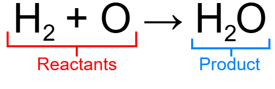
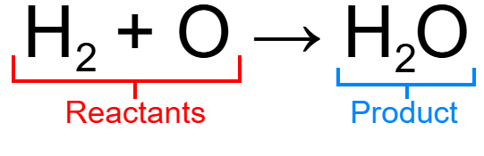

Chemical Equations
Introduction
Chemical equations is a way to represent a chemical reaction between two or more chemicals. An example of a chemical equation is the formation of water or H2O through the chemical bonding of two hydrogen atoms and one oxygen atom...
 Chemical equations are similar to mathematical equations with the two chemicals being 'added' together to form the combination. The chemicals that are present at the beginning of a chemical reaction are called reactants, and when they react with each other, they form new substances that are called products...

Now chemical equations can either be a balanced chemical equation or an unbalanced chemical equation.
Chemical equations are similar to mathematical equations with the two chemicals being 'added' together to form the combination. The chemicals that are present at the beginning of a chemical reaction are called reactants, and when they react with each other, they form new substances that are called products...

Now chemical equations can either be a balanced chemical equation or an unbalanced chemical equation.
Balanced and Unbalanced Chemical Equations
When a chemical equation is balanced, both sides have equal amounts of each atom, like the example above, both sides have two hydrogen atoms and one oxygen atom...
Since both sides have two hydrogen atoms and one oxygen atom, this chemical equation is balanced. Another way to explain how a chemical equation could be balanced is if it satifies or doesn't satify The Law of Conservation of Mass which states that no mass can be created nor destroyed, or more specifically no additional atoms can be present on a side. Take this chemical equation for example...
To find out if this chemical equation is balanced or not, we count the amount of atoms for each element seen...
Since the amount of hydrogen and oxygen atoms are not equal on both sides which means that this chemical equation is unbalanced.
Different Types of Reactions
The chemical equations of reactions can change depending on what type the reaction is, like synthesis...
Or decomposition...
In total, there are 5 (6 if you're counting acid-base reactions) main types of chemical reactions.
Synthesis
A Synthesis reaction (also called a combination reaction, direct combination reaction) is one of the types of chemical reactions that includes pure elements (ex. O, H, Mg) or compounds (ex. H2O, NaCl) as reactants that form products...
The general form for synthesis reactions is A + B → C, A and B either being pure elements or compounds...
Synthesis reactions usually are exothermic, meaning that they release heat as energy.
Combustion
A Combustion reaction is another type of reaction that happens usually with a hydrocarbon (compound made out of hydrogen and carbon) and oxygen. When a combustion reaction happens, carbon dioxide (CO2) and water (H2O) form alongside with energy...
The general form for combustion reactions is CxHy + O2 → CO2 + H2O + heat, x and y being numerals...
Single Displacement
A single displacement reaction occurs when one element replaces another in a compound during a reaction. An example is with potassium and water...
In this reaction, potassium atoms replaces the hydrogen from water to form potassium hydroxide (KOH) while also forming hydrogen gas (H2).
The general form for single displacement is A + BC → AC + B for metals and A + BC → BA + C for halogens...
Double Displacement
A double displacement reaction is when two reactants switch ions that form new substances in a chemical reaction. An example of a double displacement reaction is between sodium chloride (NaCl) and silver nitrite (NgCO3)...
The general form for double displacement is...